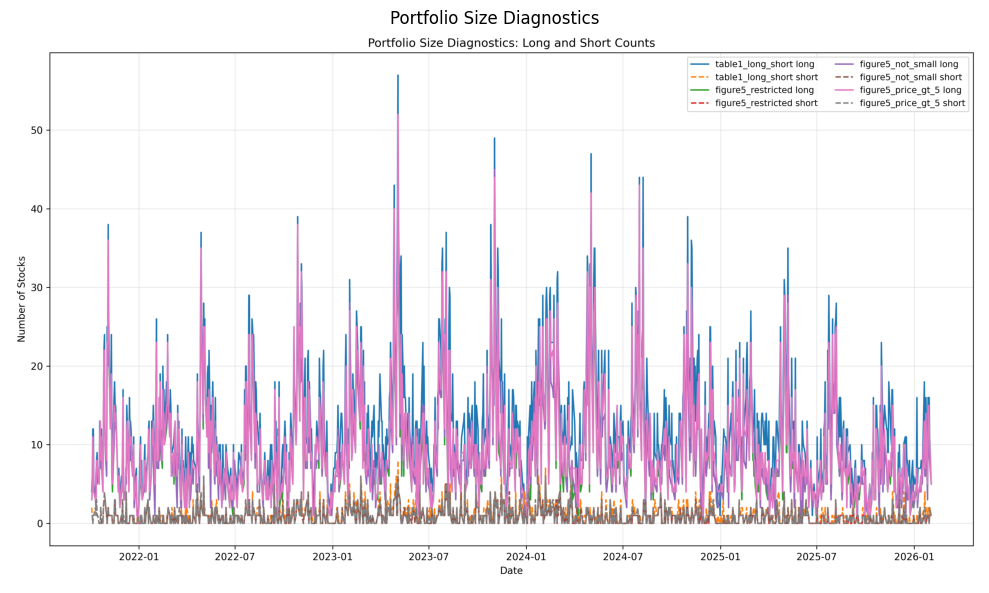

NLP Pipeline & Portfolio Construction#
This notebook walks through the two main processing stages of the replication. The replication focuses on the overnight drift strategy (Table 1 Panel A and Figure 5 of the paper). Intraday headlines are excluded during data cleaning, and no TAQ-based intraday return windows are computed.
Headline classification – submitting cleaned overnight headlines (enriched with RavenPack metadata) to OpenAI and aggregating the responses into firm-day sentiment scores.
Portfolio construction – translating sentiment scores into daily long/short trading portfolios using open-to-close drift returns.
Setup#
import json
from pathlib import Path
import matplotlib.image as mpimg
import matplotlib.pyplot as plt
import pandas as pd
from IPython.display import Markdown, display
from settings import config
DATA_DIR = Path(config("DATA_DIR"))
OUTPUT_DIR = Path(config("OUTPUT_DIR"))
1. Generating Batch Requests for OpenAI#
Each cleaned headline (scraped from free sources and enriched with RavenPack entity metadata) is formatted as a JSONL request for the OpenAI Batch API. The prompt follows the one described in the paper: the model is asked whether the headline implies a stock price increase, decrease, or neither.
Headlines are split into batches (default 40,000 per batch) and submitted asynchronously. Below is a single-row example showing exactly what one request looks like.
from notebook_helper import generate_single_request_jsonl
rp = (
pd.read_parquet(DATA_DIR / "RAVENPACK_cleaned.parquet")
if (DATA_DIR / "RAVENPACK_cleaned.parquet").exists()
else pd.DataFrame()
)
if not rp.empty:
jsonl_content, mapping_content = generate_single_request_jsonl(rp.head(1).copy())
display(Markdown("### JSONL Request (formatted)"))
print(
json.dumps(
json.loads(jsonl_content), sort_keys=True, indent=2, separators=(",", ": ")
)
)
display(Markdown("### ID-to-Row Mapping"))
print(
json.dumps(
json.loads(mapping_content),
sort_keys=True,
indent=2,
separators=(",", ": "),
)
)
del rp
Wrote requests jsonl: /var/folders/l3/tj6vb0ld2ys1h939jz0qrfrh0000gn/T/tmphjxttlyh/openai_headline_requests.single.jsonl
Number of headlines batched: 1
Wrote id to row mapping json: /var/folders/l3/tj6vb0ld2ys1h939jz0qrfrh0000gn/T/tmphjxttlyh/id_to_row_mapping.single.json
JSONL Request (formatted)
{
"body": {
"messages": [
{
"content": "Forget all your previous instructions. Pretend you are a financial expert. You are a financial expert with stock recommendation experience. Answer \"YES\" if good news, \"NO\" if bad news, or \"UNKNOWN\" if uncertain in the first line. Then elaborate with one short and concise sentence on the next line.",
"role": "system"
},
{
"content": "Is this headline good or bad for the stock price of Kennedy-Wilson Holdings Inc. in the short term?\nHeadline: Kennedy Wilson Acquires Two Multifamily Communities in Seattle for $265 Million",
"role": "user"
}
],
"model": "gpt-3.5-turbo",
"temperature": 0
},
"custom_id": "rp-0",
"method": "POST",
"url": "/v1/chat/completions"
}
ID-to-Row Mapping
{
"rp-0": {
"date": "2021-10-01",
"entity_name": "Kennedy-Wilson Holdings Inc.",
"ticker": "KW"
}
}
2. OpenAI Response Format#
The model returns one of three labels for each headline:
YES – headline implies a stock price increase
NO – headline implies a stock price decrease
UNKNOWN – no clear directional signal
Below is an example response from a completed batch.
batch_output_path = DATA_DIR / "openai_headline_batch_output.1.jsonl"
if batch_output_path.exists():
data = pd.read_json(batch_output_path, lines=True).head(1)
display(Markdown("### Sample OpenAI Batch Response"))
display(data.iloc[0]["response"])
Sample OpenAI Batch Response
{'status_code': 200,
'request_id': 'dde85f7b-47ce-4520-b489-4f96d1e15ec4',
'body': {'id': 'chatcmpl-DLKkhs3nF6Z2sK154oVKzkcHorsvQ',
'object': 'chat.completion',
'created': 1773977031,
'model': 'gpt-3.5-turbo-0125',
'choices': [{'index': 0,
'message': {'role': 'assistant',
'content': 'YES \nAcquiring new assets can potentially boost the stock price in the short term.',
'refusal': None,
'annotations': []},
'logprobs': None,
'finish_reason': 'stop'}],
'usage': {'prompt_tokens': 115,
'completion_tokens': 17,
'total_tokens': 132,
'prompt_tokens_details': {'cached_tokens': 0, 'audio_tokens': 0},
'completion_tokens_details': {'reasoning_tokens': 0,
'audio_tokens': 0,
'accepted_prediction_tokens': 0,
'rejected_prediction_tokens': 0}},
'service_tier': 'default',
'system_fingerprint': None}}
3. Firm-Day Sentiment Scores#
The pipeline (create_firmday_score.py) processes all batch
responses and aggregates them at the firm-day level:
YES → score of +1
NO → score of -1
UNKNOWN → score of 0
For each (ticker, date) pair, the total score sum and overall polarity (positive or negative) are computed.
scores_path = DATA_DIR / "daily_headline_polarity.parquet"
scores = (
pd.read_parquet(scores_path) if scores_path.exists() else pd.DataFrame()
)
print("Firm-day scores shape:", scores.shape)
display(scores.head())
Firm-day scores shape: (53880, 5)
| ticker | date | n_headlines | score_sum | score | |
|---|---|---|---|---|---|
| 0 | A | 2021-11-18 | 1 | 1 | 1 |
| 1 | A | 2021-11-23 | 1 | 1 | 1 |
| 2 | A | 2022-06-15 | 1 | 1 | 1 |
| 3 | A | 2022-08-17 | 2 | 1 | 1 |
| 4 | A | 2022-11-22 | 2 | 1 | 1 |
if not scores.empty:
summary = (
scores["score"]
.value_counts(dropna=False)
.rename_axis("score")
.reset_index(name="count")
)
summary["share"] = (summary["count"] / summary["count"].sum()).round(4)
summary = summary.sort_values("score", ignore_index=True)
display(Markdown("### Score Distribution"))
display(summary)
del scores
Score Distribution
| score | count | share | |
|---|---|---|---|
| 0 | -1 | 1399 | 0.0260 |
| 1 | 0 | 37744 | 0.7005 |
| 2 | 1 | 14737 | 0.2735 |
4. Classification Distribution#
A key diagnostic is how frequently the model assigns each label. The replication uses GPT-3.5-Turbo (because GPT-4-0314 was deprecated), which produces a substantially larger share of UNKNOWN classifications compared to the original paper (~67% vs ~35%). This reduces the number of tradable signals.
label_path = OUTPUT_DIR / "openai_output_label_proportions.csv"
if label_path.exists():
labels = pd.read_csv(label_path)
display(Markdown("### Headline Label Proportions"))
display(labels)
Headline Label Proportions
| label | proportion_2021_2024_sample_period | proportion_full_sample | count_2021_2024_sample_period | count_full_sample | |
|---|---|---|---|---|---|
| 0 | YES | 0.273562 | 0.272604 | 10072 | 15292 |
| 1 | NO | 0.031506 | 0.028629 | 1160 | 1606 |
| 2 | UNKNOWN | 0.694932 | 0.698766 | 25586 | 39198 |
5. Portfolio Construction (Overnight Drift)#
Once firm-day sentiment scores are constructed, they are merged with CRSP returns. Portfolios are formed each trading day using open-to-close returns (the drift component for overnight news). The initial reaction (previous close to open) is also recorded.
Long-Short Portfolio – buy positive-signal firms and sell negative-signal firms (both legs must have at least two firms; otherwise enter only one leg).
Long-Only Portfolio – buy only positive-signal firms.
Short-Only Portfolio – sell only negative-signal firms.
For Figure 5 replication, two additional restricted variants are constructed:
Not Small – market capitalization above the 20th percentile.
Price > 5 – previous day’s closing price above $5.
port_path = DATA_DIR / "portfolio_daily_returns.parquet"
port = pd.read_parquet(port_path) if port_path.exists() else pd.DataFrame()
print("Portfolio returns shape:", port.shape)
display(port.head())
del port
Portfolio returns shape: (1088, 20)
| date | n_neg | n_neu | n_pos | n_total | ret_long | n_long | n_short | ret_short | ret_ir_long | ret_ir_short | ret_ls_restricted | ret_ls_not_small | ret_ls_price_gt_5 | ret_mkt_vw | trade_long | trade_short | trade_ls | ret_ls | ret_ir_ls | |
|---|---|---|---|---|---|---|---|---|---|---|---|---|---|---|---|---|---|---|---|---|
| 0 | 2021-10-01 | 0 | 5 | 7 | 12 | 0.0 | 0 | 0 | 0.0 | 0.0 | 0.0 | 0.000000 | 0.000000 | 0.000000 | 0.000000 | True | False | True | 0.000000 | 0.000000 |
| 1 | 2021-10-04 | 2 | 13 | 5 | 20 | -0.030306 | 4 | 2 | -0.001542 | 0.005442 | 0.051936 | -0.034116 | -0.028099 | -0.034116 | -0.010693 | True | True | True | -0.031848 | 0.057377 |
| 2 | 2021-10-05 | 1 | 25 | 7 | 33 | 0.01095 | 6 | 1 | 0.003886 | -0.018285 | 0.011524 | 0.029155 | 0.029155 | 0.029155 | 0.006008 | True | True | True | 0.010950 | -0.018285 |
| 3 | 2021-10-06 | 0 | 15 | 13 | 28 | -0.006671 | 11 | 0 | 0.0 | -0.002133 | 0.0 | 0.000000 | 0.000000 | 0.000000 | 0.011786 | True | False | True | -0.006671 | -0.002133 |
| 4 | 2021-10-07 | 1 | 18 | 12 | 31 | 0.027744 | 12 | 1 | -0.054348 | 0.008739 | 0.114533 | -0.050161 | -0.050161 | -0.050995 | 0.002413 | True | True | True | 0.027744 | 0.008739 |
6. Portfolio Size Diagnostics#
Because GPT-3.5-Turbo classifies a larger share of headlines as UNKNOWN, fewer firms appear in the daily portfolios compared to the original paper. The chart below shows the number of stocks in the long and short legs over time.
diag_path = OUTPUT_DIR / "portfolio_size_diagnostics_all.png"
if diag_path.exists():
img = mpimg.imread(str(diag_path))
fig, ax = plt.subplots(figsize=(10, 6))
ax.imshow(img)
ax.axis("off")
ax.set_title("Portfolio Size Diagnostics")
plt.tight_layout()
plt.show()

Summary#
This notebook covered the two main processing stages:
Headlines are submitted to OpenAI, which classifies each as YES / NO / UNKNOWN. These are aggregated into firm-day sentiment scores.
Sentiment scores are merged with CRSP returns to construct daily-rebalanced trading portfolios.
The next notebook presents the replication results: Table 1 (trading performance statistics) and Figure 5 (cumulative returns).